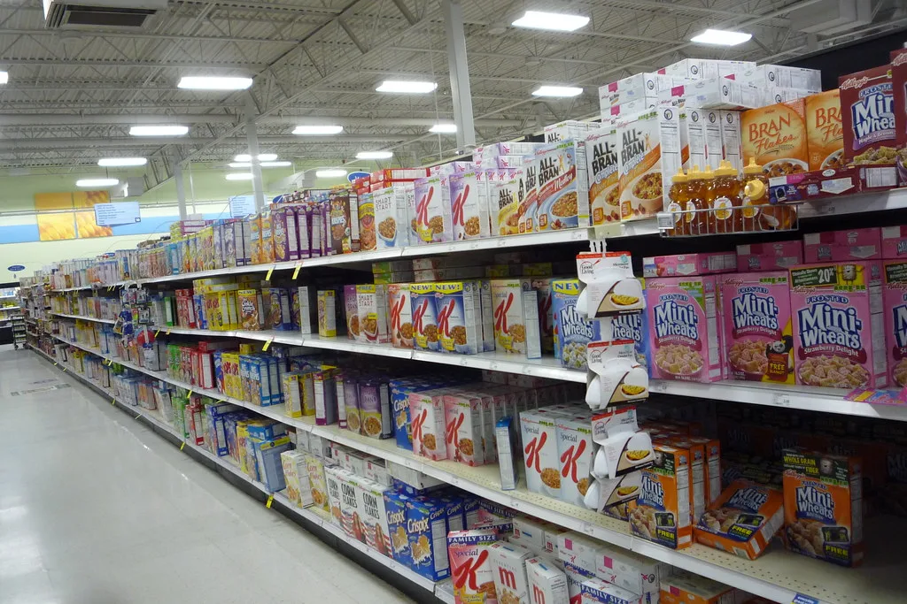

홈플러스 67개 점포 정식 재개장…회생절차 최대 분수령
기업회생절차를 밟고 있는 홈플러스가 지난 13일 임시 휴업 중이던 핵심 점포 67곳의 문을 정식으로 다시 열었다. 지난 7일 시설 점검을 위한 가오픈을 거친 뒤 열흘 가까이 상품 입고와 매장 정비를 이어온 끝에 정식 재개장에 나선 것이다. 이번 재개장은 자금난으로 존폐 기로에 섰던 홈플러스가 회생절차를 정상적으로 마무리할 수 있을지를 가늠하는 최대 분수령으로 업계는 보고 있다.
재개장한 67개 점포 가운데 59곳은 온라인 배송 서비스도 함께 정상화됐다. 다만 아시아드점과 대구남점, 삼척점, 보령점, 오창점, 송탄점, 강릉점, 구월점 등 8개 점포는 이번에 온라인 서비스 재개 대상에서 제외됐다. 홈플러스는 앞서 2000억원 규모의 긴급 운영자금(DIP 파이낸싱)을 확보한 뒤 순차적으로 매장 운영 정상화 작업에 들어갔으며, 재개장 시점에 맞춰 상품 준비를 100%에 가깝게 끌어올렸다고 설명했다.

홈플러스는 지난해 기업회생절차 개시를 신청한 이후 일부 점포 폐점과 구조조정을 거치며 사업 정상화를 모색해왔다. 이 과정에서 한때 회생절차 폐지 가능성까지 거론될 정도로 상황이 악화됐으나, 법원이 회생절차 폐지 결정을 취소하면서 절차가 다시 재개된 바 있다. 이번 67개 점포 재개장은 그 이후 나온 가장 가시적인 정상화 조치로 꼽히며, 매장 문을 완전히 닫는 대신 임시 휴업 상태로 유지해온 점포들이 실제 영업 재개로 이어졌다는 점에서 의미가 크다는 평가다. 협력업체와 임직원 사이에서는 매장 운영이 안정적으로 이어질 수 있을지에 대한 우려와 기대가 동시에 존재하는 상황이다.
업계에서는 이번 재개장의 성패가 향후 회생계획안 인가 여부에도 상당한 영향을 미칠 것으로 보고 있다. 매출이 예상만큼 회복되지 않으면 추가 구조조정이나 점포 매각 논의가 다시 불거질 수 있다는 관측도 나온다. 반면 재개장 매장의 매출이 안정적으로 회복될 경우, 남은 점포들에 대한 투자와 온라인 서비스 확대에도 속도가 붙을 것으로 예상된다. 대형마트 업계 전반이 온라인 채널 강화와 오프라인 매장 효율화를 동시에 추진하는 상황에서, 홈플러스의 회생 성공 여부는 경쟁사들의 향후 전략에도 참고 지표가 될 것으로 보인다.

소비자들 사이에서는 그동안 휴업으로 이용이 불편했던 인근 대형마트가 다시 문을 열게 됐다는 반응과 함께, 상품 구성과 가격이 예전 수준으로 회복될지 지켜봐야 한다는 신중한 시각도 공존한다. 홈플러스는 재개장 이후 고객 불편을 최소화하기 위해 매장별 재고 관리와 고객 응대 인력을 우선 배치했다고 밝혔다. 일부 지역에서는 인근 대형마트가 함께 휴업하면서 장보기 불편을 호소해온 주민들이 재개장 소식을 반기는 분위기도 감지된다.
홈플러스 측은 남은 회생절차 일정에 맞춰 온라인 서비스가 중단된 나머지 8개 점포에 대해서도 순차적으로 정상화를 추진하겠다는 계획이다. 매장별 상황에 따라 온라인 배송 인프라 재정비에 걸리는 시간이 다를 수 있어, 완전한 정상화까지는 추가 시일이 필요할 것으로 보인다. 유통업계는 이번 재개장이 성공적으로 안착할 경우 대형마트 업태 전반의 구조조정 논의에도 참고 사례가 될 것으로 보고 상황을 주시하고 있다. 협력업체들 역시 매출 회복 속도에 따라 향후 거래 조건 협상에도 영향이 있을 것으로 보고 있다.